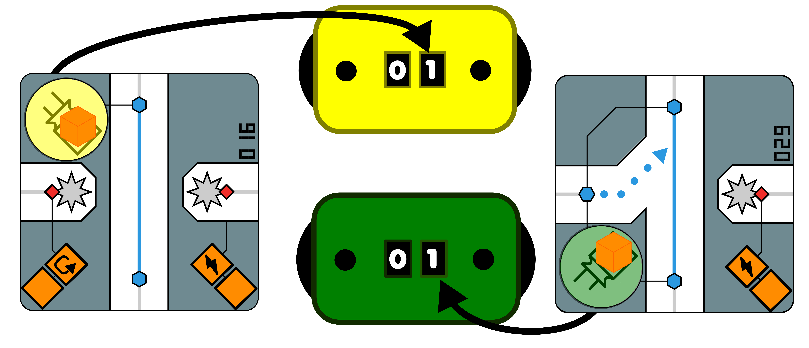

About
Run your marble through the maze earning points and altering the path. Will you find the path for maximum points? Will you prevent other players from taking the same path? only one way to find out!
Contents
50 Point Tokens

4 VP Counters

Ability die

First Player Token

100 Path Cards
4 Player Marbles
60 Player Tokens

20 Energy Tokens
12 Directional Pad Tokens
8 Rotation Gate Tokens

8 Triangle Gate Tokens

12 Toggle Gate Tokens

Setup
Note: If it's your first time playing, it is recommend to use cards 002-009 in step 2 and use events cards 1-3, 2-3, and 3-2.
1) Place the starter path card face down (card 001) in the middle of the play area face up.
2) Shuffle all path cards except card 10, draw 8 path cards face down and place them around the starter card. It will form a 3x3 grid with the starter card.
3) Rotate the cards in the grid randomly and flip over all cards int he grid.
4) If there are anyPower Cards place a directional pad or gate token on the card assoicated to the card.
5) Set the ability die, point tokens, and path cards to the side with room for a discard pile.
6) All players take a color marble with it's matching player markers and a victory point dial.
7) All players draw four path cards and add them to their hand. Cards in your hand are not shared with the rest of the players.
8) The player who has the highest number card in their hand, recieves the first player token and adds path card 010 to their hand.
9) Randomly select a Level 1, Level 2 and Level 3 event card. Place them facedown in a stack with Level 1 on top, Level 2 middle and Level 3 on bottom. Do not reveal any of the events.

Path Cards
Card properties
1) Card number - Each card is unique has a unique number which is used for initial setup.
2) Path Node - When entering a card you will place your marble here.
3) Path - Path the marble will travel to get to the next card (colored line).
4) Point slot / Ability slot - Tells you what abiltiy to activate and where you place point tokens.
5) Directional Path - This is a one way path.
6) Player Token Ability - Abilites that can be claimed by players.
7) Starting Point - Place where you can put your marble to start the roll phase.

Starting the Round
At the begining of the round flip over the topcard of the event deck. Read outloud the event and adjust the maze accordingly, additional rules on the event card overwrite base rules. Each player then collects two energy. The player with the first player token will take their turn first, (see During Your Turn section) after they have finished, players will take turns in a clockwise order.
During your Turn
The turn has four phases that are player in order:
Build Phase:
1) Place a path card on the maze.
A path card has to be connected to a card that is already on the board. You can pick the rotation of the card on placement.

2) If the card is a power card, place the token associated to the power card.


Roll Phase:
1) Select a Starting Point and place your marble on the Path Node next to the Starting Point.


2) The path node is connected to ability slot and / or a point slot. If it's an ability slot, activate the Ability then place a point marker on the ability slot.
If it's a point slot, place a point marker on it. You only will place one marker total per marble visit.
3) Repeat step 2 until your marble runs out of momentun, reaches a dead end or runs off the edge of the current maze. The marble is considered done rolling and you will move onto the collection phase.
If you pass a path your marble has already crossed, you can place a point token on an open connected point slot.

Losing Momentum
A marble will stop rolling if it has passed four path cards with no point tokens added, no energy spent, or player tokens placed.
Dead End
A marble will stop rolling if it enters a card path that is a dead end. A deadend is marked by a path cut corners.
Edge of the Maze
A marble will stop rolling if it exits the open end of a card.

Collection Phase:
1) If there is any active flags each player collects a VP for each active flag matching their player color.

2) If there are any toll booths with point tokens on them, the player who owns that toll booth removes the point token and collects a Victory Point.
3) Collect all point tokens on the board add those points to your Victory Point tracker.

Refresh Phase:
1) Remove your marble and all energy tokens in the maze.
2) If you have less then five cards draw cards draw till your hand has five.
3) Select one of the cards in the maze that does not have a token on it and discard it. Replace it with a card from your hand using the building phase rules.
4) If you have more then four cards discard your hand down to four.
Note: If the draw pile is ever empty, reshuffle the discard pile back into the draw pile.
End of Round
When the last player has finished their turn, the round ends. A new event card is drawn for the new round (the old event is no longer in effect). Each player resets their energy tokens to two. The player with the starter token passes it to their left. The player with the first player token then starts the next round.
Note: In a two player game, the first player token does not get passed.
End of Game
The game ends when the third round is completed with the final event. All players count up their victory points, the player who has the most victory points wins! If there is a tie, whoever has the most active booths of the tie players win!
Power Cards
Power cards are noted having the  symbol. The path connected will also have a point slot to set points on. Power cards have different routes on how marbles pass through them. These routes can be changed by paying an energy token to alter the route. You can only use one energy on a power card per a roll phase, choose wisely!
symbol. The path connected will also have a point slot to set points on. Power cards have different routes on how marbles pass through them. These routes can be changed by paying an energy token to alter the route. You can only use one energy on a power card per a roll phase, choose wisely!
Toggle Gate
A marble will roll to the open path the gate is not blocking. Once the marble has past the gate, the gate's position is toggled to block the alternate path.
An energy token can be spent to toggle the gate before or after the marble has passed the gate. The gate still toggles after the marble has passed.
Rotation Gate
A marble will roll and follow the direction of the arrow on the roation gate.
Once the marble has past the gate, the gate will rotate 90 degrees clockwise.
An energy token can be spent to rotate the gate 90 degrees clockwise or counter clockwise. The gate still rotates 90 degress clockwise after the marble has passed it.

Triangle Gate
A marble will roll to the open path the gate is not blocking.
The marble will go straight if the path is fully blocked by the gate. (Indicated by the arrow)
Once the marble has past the gate, flip the token so the diamond on the token and on the path card line up to create an alternate path
An energy token can be spent to flip the gate before or after the marble has passed the gate. The gate still toggles after the marble has passed.

Directional Pad
A marble will roll straight through a directional pad.
An energy token can be spent to change the direction the marble is moving including backwards!

Springs
Some power cards will have the  symbol. When a marble passes this icon is jumps over a card to the next card. When a spring is paired with a directional pad or rotation gate you still follow the rules of that power card.
symbol. When a marble passes this icon is jumps over a card to the next card. When a spring is paired with a directional pad or rotation gate you still follow the rules of that power card.
Path Abilities
Almost all paths have an ability associated to them. An ability is activated when a marble enters a path on the card.
 Draw a Card
Draw a Card
Draw a card from the draw pile and add it to your hand.
 Place a Card
Place a Card
Place a card from your hand onto the maze, following build phase rules.
Rotate a Card
Pick the orientation the card in the maze. You cannot rotate the card with a marble on it.
 Swap a Card
Swap a Card
Swap two cards that are neighboring the card your marble is on. Keep the orientation of each card. You cannot swap a card with a marble on it.
Gain a Victory Point
Gain a Victory Point. You still place a point on the point slot.
Gain an Energy Token
Collect an energy token. This can only be used this turn.
Roll for Ability
Roll the die, activate the ability on the die.
 Place a Flag
Place a Flag
When passing a flag, place one of your player markers on top of the flag. If there is a different player marker already on the flag replace it. Point tokens are not placed on flags and player markers are not removed unless being replaced.
 Place a Toll
Place a Toll
Take one of your player markers and place it over the toll. When a marble passes the path with the toll, place a point token on top of the toll booth matching the color with the owner. The player marker is not removed and stays till the end of the game.